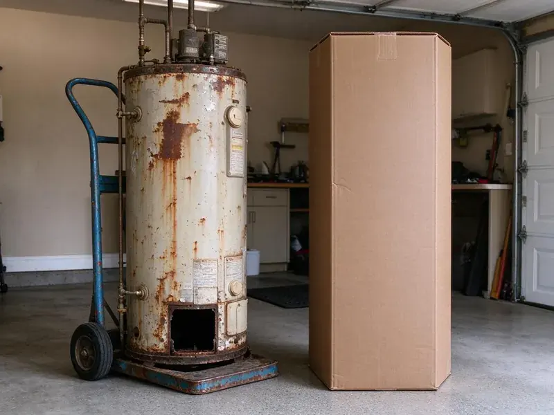

Pipe Replacement in Tulsa, OK
We replace failing water and drain pipes across Tulsa, OK with attic-routed lines, small wall openings and careful cleanup.
- Upfront Pricing
- Clear Pricing
- Prompt, Reliable Service
- Licensed & Insured

Expert Pipe Replacement Services in Tulsa, OK.
Don't let old or damaged pipes lead to bigger problems. Contact JBK Plumbing for a professional assessment.
Dependable Home Pipe Replacement in Tulsa, OK
JBK Plumbing plans each repipe so most new lines run through the attic and drop down inside walls, which keeps openings small. We pressure test the new system before any drywall is patched and schedule the city inspection.
Our expertise includes:
- Cast iron and failing ABS drain line replacement
- Slab leak pipe repair and replacement
- Partial pipe section replacement

Additional Plumbing Replacement Services in Tulsa, OK
When repairs are no longer enough, our replacement services in Tulsa, OK deliver modern, efficient equipment installed right.


Customers
Why Choose JBK Plumbing for Pipe Replacement in Tulsa, OK?
Choosing JBK Plumbing for your pipe replacement means choosing peace of mind and long-term reliability.
- Tested Systems, Every repipe is pressure tested and inspected before walls are closed up.
- Quality Materials, We use only high-grade, long-lasting materials like PEX and copper, providing a durable and reliable plumbing system for your home.
- Clear Communication, We keep you updated throughout the entire pipe replacement process, from initial assessment to project completion.
Citywide Coverage
JBK Plumbing proudly serves every neighborhood and suburb within Tulsa for all your pipe replacement needs. Whether you're in an older part of town with galvanized pipes or a newer development, our local teams are ready to help.
Experienced Team
Our team of licensed plumbers brings extensive experience to every pipe replacement project. They are continuously trained on the latest techniques and materials to ensure your plumbing upgrade is performed to the highest standards.
Safety-First Approach
We follow local plumbing code for pipe sizing, support spacing, nail plates and fitting types. Permits are pulled and inspections are booked before walls are closed.
Trusted Certified Tulsa Plumbing Services Professionals
At JBK Plumbing, we take pride in providing certified plumbing services throughout Tulsa, OK. Backed by recognized industry credentials, our experienced plumbers combine technical skill with genuine customer care. Whether it is repair, installation, or maintenance, we follow strict safety and quality standards to deliver lasting results you can trust.
Call Us Now PHCC Plumbing Contractor Recognition
PHCC Plumbing Contractor Recognition Better Business Bureau (BBB) Accreditation
Better Business Bureau (BBB) Accreditation Angi Certified Pro
Angi Certified Pro ISO 9001 Quality Management Certification
ISO 9001 Quality Management CertificationQuality Pipe Replacement Services in Tulsa, OK
PEX Repiping in Tulsa
PEX-A is flexible, resists scale buildup and expands slightly if water freezes, which helps in colder homes. We use expansion fittings that keep the full inside diameter of the pipe for better flow. Systems can be run as a home-run manifold with a shutoff for each fixture or as a trunk and branch layout. PEX installs faster than copper with far fewer fittings in the walls. It is our most popular repipe material.

Emergency Pipe Replacement in Tulsa, OK
A burst pipe is a plumbing emergency that requires urgent attention to prevent extensive water damage. JBK Plumbing offers emergency pipe replacement services across Tulsa, OK. Our rapid response team is equipped to quickly assess the damage, shut off the water, and perform the necessary repairs or replacements. We understand the urgency of these situations and work diligently to restore your plumbing system and minimize disruption to your home.
Water Line Replacement vs. Repair in Tulsa, OK
Deciding between pipe repair and full replacement depends on several factors, including the age of your pipes, the extent of the damage, and the frequency of past issues. A small, isolated leak might be repaired, but widespread corrosion or multiple leaks usually warrant replacement. JBK Plumbing provides straightforward assessments in Tulsa, OK, explaining the pros and cons of each option. We help you make an informed decision that offers the most cost-effective and long-lasting solution for your home.
Whole-Home Re-Piping in Tulsa
For homes with widespread pipe issues like frequent leaks, discolored water, or low water pressure, a full-home re-piping might be the best solution. We thoroughly assess your existing system, often finding old galvanized steel or polybutylene pipes that are past their lifespan. Our team provides efficient replacement with modern, durable materials like PEX or copper, significantly upgrading your entire plumbing infrastructure. This complete service in Tulsa ensures consistent water flow and eliminates future pipe-related headaches.
Slab Leak Pipe Repair and Replacement in Tulsa
Slab leaks, where pipes under your concrete foundation leak, are a serious concern for homeowners in Tulsa. These leaks can cause foundation damage, mold growth, and wasted water. JBK Plumbing uses modern leak detection technology to pinpoint the exact location of the leak. Depending on the severity and accessibility, we offer targeted pipe repair or rerouting and replacement solutions to fully resolve the issue, protecting your home's structural integrity.
Corroded Pipe Replacement in Tulsa, OK
Many older homes in Tulsa, OK still have galvanized steel pipes, which are prone to internal corrosion over time. This corrosion chokes water flow, reduces water pressure, and can introduce rust particles into your drinking water. Our pipe replacement service targets these corroded sections, replacing them with new, non-corrosive materials like PEX or copper. This restores proper water flow and ensures clean, fresh water throughout your home.
Slab Leak Pipe Replacement in Tulsa
Slab leaks, common in homes built on concrete foundations, can be destructive and difficult to detect. These leaks often stem from corroded or damaged pipes embedded within or under your home's slab. JBK Plumbing uses modern leak detection technology to locate the exact source, then expertly repairs or reroutes the compromised pipe, often using durable PEX to bypass the slab entirely, avoiding future issues in the same spot.

Commercial Pipe Replacement in Tulsa
Beyond residential services, JBK Plumbing also provides commercial pipe replacement for businesses and properties in Tulsa. Commercial plumbing systems often face higher demands and require specialized knowledge. Whether it's replacing supply lines in an office building, drainage pipes in a restaurant, or addressing complex industrial piping, our experienced commercial plumbers ensure minimal downtime and durable solutions tailored to your business needs.
Pipe Replacement Near Me in Tulsa, OK
If you are searching for pipe replacement near me, you want a local plumber who knows how homes in your area were built. JBK Plumbing serves Tulsa with repipe crews who understand slab foundations, attic routing and local inspection requirements. We can often inspect and quote within a few days.
A nearby team also means faster response if a leak shows up before your scheduled repipe. We can patch the immediate problem and fold it into the larger project. Call us for a straightforward, written estimate.
JBK Plumbing at a Glance
- Licensed and insured plumbers serving Tulsa, OK
- Same-day appointments and 24/7 emergency response
- Clear written estimates, no hidden fees
- 4.8-star rated by 318+ Oklahoma customers
Tulsa Map
Tulsa Information
- Population
- 411,894
- Area codes
- 918/539/580
- Service area
- Tulsa and communities within 40 miles
- Nearby
- Broken Arrow, Owasso, Bixby, Muskogee
Ground movement and temperature changes can stress older pipes, so reliable pipe replacement is crucial for maintaining a healthy plumbing system in your Tulsa, OK home.
Expert Services
Trust our professionals for reliable JBK Plumbing solutions in Tulsa, OK.
Our Specialized Plumbing Services in Tulsa, OK
At JBK Plumbing, we provide a complete range of plumbing services across Tulsa, OK. From leak detection to full system installations, our team ensures fast, precise, and affordable service for both residential and commercial properties. Explore our core services below:


How Our Pipe Replacement Process Works in Tulsa, OK
We keep pipe replacement orderly, predictable and as low-disruption as possible.
Request a Quote
Contact JBK Plumbing by calling (405) 507-8396 or filling out our online form to schedule an initial consultation. We will discuss your pipe issues and arrange a convenient time for an on-site assessment.
On-Site Assessment
Our expert plumber will visit your Tulsa home to carefully inspect your plumbing system, identify the problematic pipes, and determine the best replacement strategy. We will provide a detailed, upfront estimate.
Professional Installation
Once you approve the estimate, our team will carefully replace the old or damaged pipes using high-quality materials and proven techniques. We work efficiently and cleanly, minimizing disruption to your home.
Frequently Asked Questions About Pipe Replacement in Tulsa
The cost of pipe replacement in Tulsa, OK varies significantly based on the scope of work, materials chosen (PEX vs. copper), and accessibility. A small section replacement might range from $500 to $2,000, while a whole-home re-pipe can range from $5,000 to $20,000 or more. JBK Plumbing provides detailed, upfront estimates after a complete on-site assessment, ensuring transparency with no hidden fees.
Yes, significant plumbing work like whole-home re-piping or major section replacement in Tulsa usually requires a plumbing permit from the local building department. This ensures the work meets local codes and is properly inspected. JBK Plumbing handles all necessary permit applications and inspections as part of our service.
Common signs include frequent leaks, low water pressure, discolored or rusty water, banging noises in your pipes, and a sudden increase in your water bill without explanation. If your home has galvanized steel or polybutylene pipes and is over 40 years old, it's a smart move to have them inspected.
While DIY projects can save money, pipe replacement is a complex job that requires specialized tools, knowledge of plumbing codes, and significant experience. Improper installation can lead to costly leaks, water damage, and code violations. For safety and long-term reliability, it's always best to hire a licensed professional like JBK Plumbing.
Yes, JBK Plumbing stands behind our work. We offer solid warranties on both the materials we install and our labor for pipe replacement projects in Tulsa, OK. Specific warranty details will be provided with your estimate, ensuring peace of mind.
The timeline depends on the scope. A small, targeted section replacement might take a day or two. A whole-home re-pipe for an average-sized house can take anywhere from 3 to 7 business days, depending on the complexity and accessibility of the existing plumbing. We work steadily to minimize inconvenience.
Yes, for significant pipe replacement projects, especially whole-home repipes or changes to the main water or sewer lines, permits are usually required by local building codes. JBK Plumbing handles all necessary permits and inspections to ensure your project is compliant with local regulations.
While minor repairs might be attempted by experienced DIY enthusiasts, full pipe replacement is a complex job that should be left to licensed professionals. Incorrect installation can lead to costly leaks, water damage, and code violations. Our Tulsa plumbers have the tools, training, and experience to do the job right.
What People Are Saying About Our Plumbing Experts?

James P.
Our commercial plumbing system had a leak under the sink, and JBK Plumbing handled it professionally. The plumbers arrived quickly and restored everything without disruption to our customers.
Commercial Plumbing · Stillwater, OK
Sofia M.
Two new toilets installed in one visit, no mess left behind, and the tech even adjusted a faucet he noticed was dripping. Fair pricing and really friendly.
Toilet Installation · Tulsa, OK
Patricia H.
We had a slab leak that two other companies could not find. JBK Plumbing located it in under an hour, explained our options, and the price matched the quote to the dollar.
Slab Leak Repair · Tulsa, OKRobert G.
The trenchless sewer replacement saved our front yard. They walked us through the camera inspection footage first so we knew exactly what we were paying for.
Sewer Line Replacement · Stillwater, OK
Emily R.
I called JBK Plumbing for plumbing repair, and the technician was fast, polite, and thorough. They explained the problem clearly and fixed it the same day. I will definitely hire them again. Highly recommended!
Plumbing Repair · Stillwater, OKLaura S.
I scheduled a water heater replacement, and the team made the process smooth and affordable. The new unit works perfectly, and they cleaned up after completing the job.
Water Heater Replacement · Tulsa, OK